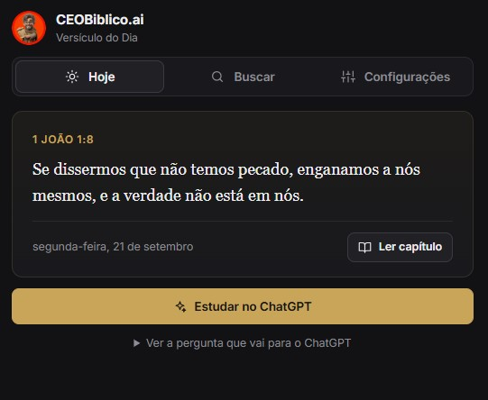
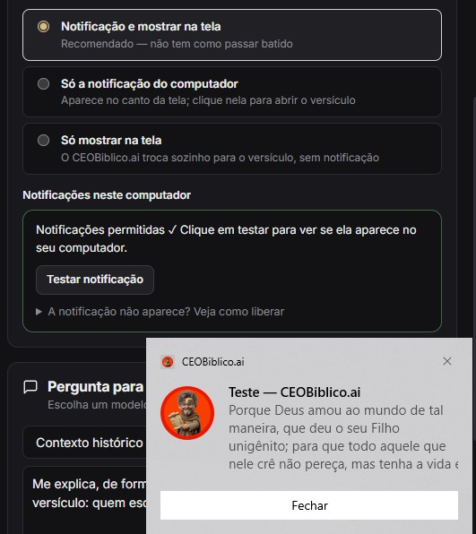
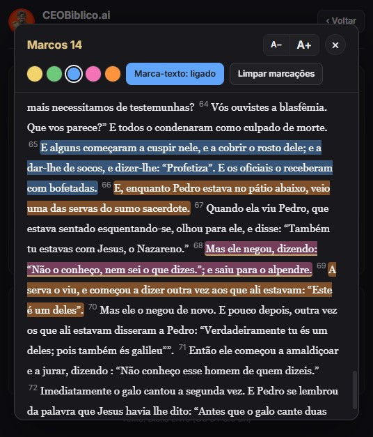
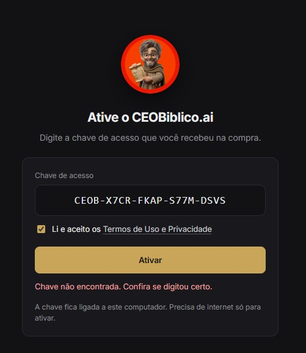

CEOBiblico.ai Versículo do Dia
Um versículo por dia, direto no seu computador
Assista ao vídeo e veja como funciona.
Não deu para carregar o vídeo agora. Recarregue a página.
Compra segura · Acesso liberado na hora
-
Todo dia, no seu horário
Um versículo do Novo Testamento chega como notificação.
-
Estude com o ChatGPT
Um clique e você recebe a explicação do versículo.
-
Leia o capítulo inteiro
Contexto completo e busca na Bíblia, dentro do app.
Como é por dentro
Quatro telas para você ver o que recebe.

Abriu o app, o versículo do dia já está lá — com a data, a referência e o botão para ler o capítulo inteiro.

Notificação no canto da tela, o versículo aberto na tela inteira, ou os dois juntos — no horário que você marcar.

Leia o capítulo inteiro dentro do app, aumente a letra e marque os versículos em cinco cores.

Você recebe uma chave na compra, digita uma vez e pronto. Depois disso o app funciona no seu computador.
“Tua palavra é lâmpada para meus pés e luz para meu caminho.”
Salmos 119:105